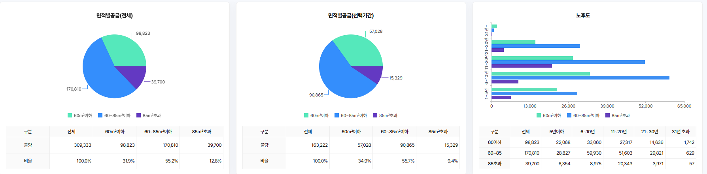

봉담 권역 핵심 압축 지표 (Executive Summary)
데이터 기준: 2026.11수도권 서남부 분당급 자족 신도시로의 대전환
과거 수원시의 외곽 배후 주거지에 머물렀던 경기도 화성시 봉담 권역이 대규모 공공주택지구 지정, 민간 도시개발사업의 집적, 입체적 광역 철도망의 확충에 힘입어 **합산 주택 공급 약 5만 세대, 계획인구 12만~13만 명**을 수용하는 수도권 서남부 최대 규모의 자족형 신도시로 도약하고 있습니다. 화성시의 100만 특례시 승격 및 4개 일반구(효행구·만세구·병점구·동탄구) 체제에서 **효행구의 핵심 성장 엔진**으로 자리매김했습니다.
여의도 80% 규모(약 69만 평, 18,270세대). 2025년 12월 국토부 지구계획 최종 승인. 수인분당선 신설역과 13만㎡ 첨단 자족용지 결합.
약 41.8만 평, 약 10,094~12,000세대(화성 7,197호 / 수원 3,284호). 1조 7,000억 원 투입 지자체 경계 복합개발.
내리지구 프라이드시티(4,034세대) 입주 안착, 동화지구 자이라젠느·파라곤, 봉담2지구 1.1만 세대 완성으로 명품 주거벨트 형성.
화성시 전입 1위 & 통근 1위: 실수요 인구의 블랙홀
KCB 4,400만 명 금융활동 인구 빅데이터(2026년 최신 기준)를 분석한 결과, 봉담읍은 화성시 전체에서 전입 비율(6.33%)과 계속거주 비율(18.23%), 출퇴근 통근 비율(4.85%) 모두 압도적 1위를 기록했습니다.
화성시 주요 읍면동 이주(전입) 비율 TOP 8
단위: %화성시 거주자 직장 통근 비율 TOP 8
단위: %2024년 입주 물량 피크 소화 완료 및 2025~26 공급 급감기 진입
2024년 하반기 내리지구 4,034세대(프라이드시티) 등 대규모 입주 장세를 성공적으로 소화하였으며, 화성시 전체 미분양 호수는 57호로 수도권 최저 수준입니다. 2025년부터 시작되는 공급 축소 사이클은 봉담 전세가와 매매가를 탄탄하게 지지합니다.
화성시 연도별 아파트 입주 공급물량 추이 (2020~2026)
단위: 세대 (호)봉담읍 핵심 단지 공급 리스트 및 입주 타임라인
사통팔달 철도망과 3기 신도시급 거점의 결합 시너지
봉담은 단순한 주택 공급 지역이 아닌 수인분당선 신설역(천천역), 신분당선 봉담 연장, 인천발 KTX 어천역 등 수도권 남부 최고의 철도 결합 거점으로 거듭납니다.
수인분당선 신설역 (가칭 천천역/봉담3역)
어천역과 오목천역 사이에 신설되며, 국토부 지구계획 상 **34,000㎡ 역사 부지 확정 고시**. 봉담3 공공주택지구 내부를 관통하는 핵심 전철역으로 수원역 환승을 통해 GTX-C(삼성역 40분)와 직통 연계됩니다.
신분당선 봉담 연장선 (호매실 ~ 봉담)
호매실에서 봉담까지 약 7.0km 연장. 판교와 강남 테헤란로를 환승 없이 40분대에 진입시키는 황금 노선으로 봉담 1·2지구 및 효행지구 주민들의 최우선 교통 숙원 사업입니다.
인천발 KTX 어천역 직결
봉담에서 차량 7~10분 거리의 어천역에 KTX가 정차하여, 부산 2시간 10분, 광주 1시간 40분대로 연결되는 광역 고속철도망을 즉시 흡수합니다.
과천-봉담 도시고속화도로 & 제2순환망
봉담IC를 통한 강남·서초 직통 쾌속 도로망, 봉담-송산 및 봉담-동탄 고속도로를 통해 경기 남부 동서축 산업벨트를 20분대로 연결합니다.
봉담3 공공주택지구 사업 단계별 타임라인
국토교통부 지구계획 최종 승인, GH 및 화성도시공사 합류 확정
토지·지작물 기본조사 완료 및 하반기 보상계획 공고·감정평가 착수
토지 협의 보상 및 본청약 돌입, 부지 조성 공사 순차 착공
18,270세대 입주 및 자족용지 R&D 집적단지 최종 사업 준공
의료·행정·복지 3대 인프라와 6만 평 '기후대응 도시숲'
봉담2지구를 중심으로 종합병원, 세무서, 사회복지관이 결합되고, 30년간 방치되었던 삼보폐광산 부지가 수도권 남부 대표 힐링 생태 숲으로 전면 탈바꿈합니다.
299병상 규모 종합병원 (허원의료재단)
봉담읍 상리 693번지 일원 지하 2층~지상 7층. 응급의학과, 소아청소년과, 정형외과 등 18개 진료과 설치로 야간·응급 의료 공백 완전 해소.
화성세무서 단독 청사 신축
봉담 상업지구 내 신축 이전. 서남부권 세무 행정의 중심지로 기능하며 공무원 및 방문객 유동인구 증가로 상권 활성화 기여.
화성북부 종합사회복지관
영유아·초등학생 및 3040 부모 비율이 높은 봉담의 특성에 최적화된 아동 돌봄, 청소년 문화, 가족 복합 복지센터 운영.
삼보폐광산 6만 평 '기후대응 도시숲'
30년 오염 잔재였던 상기리 삼보폐광산(18만㎡)을 KOMIR와 화성시가 전면 복토·정화 완료. 미세먼지 차단숲 및 힐링 트래킹 명소화.

봉담노후도.png 이미지를 불러올 수 없습니다.* 봉담1지구 및 와우리 일대의 15~20년 차 구축 아파트 밀집 지역과 봉담2지구·동화·내리지구 신축 클러스터 간의 노후도 편차가 뚜렷하여 신축 이동 수요가 강하게 형성되고 있습니다.
시세 흐름과 수요자·투자자 3대 실행 전략
봉담2지구 전용 84㎡ 기준 실거래가는 5억 초중반에 안착했으며, 2025~2026년 화성시 공급 절벽에 힘입어 전세가율 상승과 매매가 하방 경직성이 한층 공고해지고 있습니다.
화성시 공급 물량이 4천 세대 수준으로 급감하는 2025~2026년 상반기를 이용해 봉담2지구 역세권 준신축이나 동화지구 신축 분양권(라젠느 등) 매수를 통한 거주 안정성 확보 추천.
2027~2028년 본격화될 **봉담3 공공주택지구(18,270세대)**는 강력한 분양가 상한제 혜택이 적용되므로 화성시 거주 당해 요건(1년 이상)과 인정 납입액 저축 집중 필요.
수인분당선 신설역(천천역) 인근 상업/준주거 용지 및 효행지구 연계 축의 상가주택·근린상가 등 철도 개통 시점(2030~32년)에 맞춘 5~7년 주기 중장기 투자 유효.